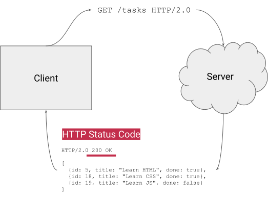

REST Services with Django
Learning Objectives
- Understand what a REST service is
- Create a simple REST service with Django
Agenda
- REST
- Django
- Models
- Django REST framework
- Filters
Resources
REST Diagram
HTTP Method Diagram
URL Diagram
HTTP Status Diagram

HTTP Overview
HTTP Methods
4 out of the 9 HTTP methods:
HTTP Headers
HTTP/1.1 200 OK
Date: Sat, 09 Oct 2010 14:28:02 GMT
Server: Apache
Last-Modified: Tue, 01 Dec 2009 20:18:22 GMT
ETag: "51142bc1-7449-479b075b2891b"
Accept-Ranges: bytes
Content-Length: 29769
Content-Type: text/html
<!DOCTYPE html...Additional key-value pairs passed with a request or response.
HTTP Status Ranges
HTTP status ranges in a nutshell:
— Steve Losh (@stevelosh) August 28, 2013
1xx: hold on
2xx: here you go
3xx: go away
4xx: you fucked up
5xx: I fucked up
HTTP Status
URL

Read more: What is an URL?, MDN
Recall: Fetch API (GET)
fetch("https://api.quotable.io/random")
.then((response) => {
console.log("HTTP Response status: " + response.status);
return response.json();
})
.then((data) => console.log(data));Recall: Fetch API (POST)
const data = {
/*... */
};
fetch("/shop/articles", {
method: "POST", // *GET, POST, PUT, DELETE, etc.
headers: {
"Content-Type": "application/json",
},
redirect: "follow", // manual, *follow, error
body: JSON.stringify(data), // body data type must match "Content-Type" header
})
.then((response) => response.json())
.then((data) => console.log(data));Read more: Using Fetch, MDN
REST Principles
4 of the 6 principles:
- Client-server separation.
- Uniform: use standard protocols and formats: HTTP, URI, and very often JSON.
- Stateless: each request is self-contained and does not depend on prior requests.
- Cachable: responses include cache-control information.
REST Simplified
Beginners can assume a REST API means an HTTP service that can be called using standard web libraries and tools.
WSGI/ASGI
- Python web frameworks are often WSGI/ASGI applications
- Most frameworks are invoked per request
Setting up a Python Environment (Linux, MacOS)
- Virtual environment can be created with the built-in venv module
mkdir webservice
cd webservice
python3 -m venv env
env/bin/python --version
env/bin/pip list
env/bin/pip install djangoSetting up a Python Environment (Windows)
- On windows, you should use
Scriptsinstead ofbinand might to use backslashes and/orpythonorpy:
mkdir webservice
cd webservice
py -m venv env
env\Scripts\python --version
env\Scripts\pip list
env\Scripts\pip install djangoDjango
- Model - Template - View
- Free and open source
- Much “magic”
- Old (15 years) but still new features (ASGI)
- Often used, lot of extensions
- One project, many apps
Django Admin
- The django admin CLI provides skeletons for projects and apps
env/bin/django-admin --help
env/bin/django-admin startproject --help
env/bin/django-admin startproject webservice .
env/bin/django-admin startapp shopTypical Structure of a Django Project
Django Management
- The django managment script provides commands for database migration, debug server, etc.
- It’s possible to define your own commands as well
env/bin/python manage.py --help
env/bin/python manage.py migrate
env/bin/python manage.py createsuperuser
env/bin/python manage.py runserver- Frontend: http://127.0.0.1:8000/
- Backend: http://127.0.0.1:8000/admin
Exercise 1
- Create a python environment and a django project and app.
- Register your app in the settings.
- Initialize the DB and add a superuser.
- Update the gitignore to ignore the env and the pycache directories
- Add a README which explains how to set up the project.
A Simple REST Service with Django
- In Django, every endpoint has its own view (function or class method)
- Views are mapped to an URL with a route
Views
- Views are functions which take a request and return a response
from django.http import JsonResponse
def view_article(request):
return JsonResponse({
'id': 1,
'name': 'Screwdriver'
})Routing: Application
- Application URLs defined for every view (shop.urls)
from django.urls import path
from shop.views import view_article
urlpatterns = [
path('articles/1/', view_article),
]Routing: Project
- All application URLs can be included at an endpoint (webservice.urls)
from django.contrib import admin
from django.urls import include, path
urlpatterns = [
path('admin/', admin.site.urls),
path('shop/', include('shop.urls')),
]Routing: Patterns
- Routing consists of patterns
- Variable parts are passed as arguments
urlpatterns = [
path('articles/<int:id>/', view_article),
]def view_article(request, id):
return JsonResponse({
'id': id,
'name': 'Screwdriver'
})Request Method
- The request object contains all information about the current request
- The method is available through the request as string
def view_article(request, id):
if request.method == 'GET':
pass- In this case, we need to disable the CsrfViewMiddleware for POST, PATCH and DELETE
Parsing JSON
- The body of the request may contain JSON
from json import loads
def view_article(request, id):
data = loads(request.body)Returning HTTP Status Codes
- There are responses for every status code
from django.http import HttpResponseNotAllowed
def view_article(request, id):
return HttpResponseNotAllowed(['GET', 'POST'])cURL
- cURL is a CLI tool for making requests
curl --include \
--request POST \
--header "Content-Type: application/json" \
--data '{"name":"test"}' \
http://localhost:8000/shop/articles/Exercise 2
- Create a simple static REST service.
- Add a GET method for all articles and return some fictional IDs
- Add a POST method for all articles and return the given data and a fictional ID
- Add a GET method for one article and return the ID
- Add a PATCH method for one article and return the ID and the given data
- Add a DELETE method for an article and return the ID
- Return a HTTP 405 for other cases
- Test the views with curl
Django Models
- Django has its own object-relational mapper (ORM)
- Requests are normally NOT bound to a transaction but immediately commited
- Some DB interactions may need an atomic decorator/context manager
from django.db.models import Model
from django.db.models import CharField
class Article(Model):
name = CharField(max_length=50)- Every model gets automatically an auto-incremented id!
Fields
- Django provides a lot of different DB fields, more are available using additional libraries
- Boolean: BooleanField
- Text: CharField, TextField, EmailField, URLField, UUIDField, FilePathField
- Numbers: IntegerField, FloatField, DecimalField
- JSON: JSONField
- Files: FileField, ImageField
- Date & Time: DurationField, DateField, DateTimeField, TimeField
- Relationships: ForeignKey, ManyToManyField, OneToOneField
Querying
- Django allows DB interaction using the
objectsproperty of any model
Article.objects.create(name=name)
Article.objects.all()
Article.objects.all()[:5]
Article.objects.filter(id=id).get()
Article.objects.filter(id=id).first()
Article.objects.order_by('name').all()[:5]
Article.objects.order_by('-name').all()[:5]
article.name = name
article.save()
article.delete()Migrations
- Djangos migration management is reason alone to chose it! It supports automatic migration script creation and historical models!
env/bin/python manage.py makemigrations
env/bin/python manage.py migrateAdmin UI
- Models can be registered and are then available at the admin UI
from django.contrib.admin import ModelAdmin, register
from shop.models import Article
@register(Article)
class ArticelAdmin(ModelAdmin):
passExercise 3
- Define a database model for the articles
- Create the migration script and migrate the database
- Use the model in the views
- Register the model for the admin UI
- Return a 404 if the article with a given ID does not exist
Django REST framework
- Django REST framework is a django extension for easily creating REST APIs
- Browsable API: http://127.0.0.1:8000/
Installing Packages Using a Textfile
- pip allows installation from a text file
pip install -r requirements.txt- it’s possible to pin version
django==3.2.4
djangorestframeworkSet up the Django REST framework
- Install
pip install djangorestframework
- Enable
INSTALLED_APPS = [
...
'rest_framework',
]View Sets
- Viewsets are classes which provide CRUD operations for models
from shop.models import Article
from shop.serializers import ArticleSerializer
from rest_framework.viewsets import ModelViewSet
class ArticleViewSet(ModelViewSet):
queryset = Article.objects.all()
serializer_class = ArticleSerializerActions
- Additional actions can be defined for on instance or all instances
from shop.models import Article
from shop.serializers import ArticleSerializer
from rest_framework.viewsets import ModelViewSet
from rest_framework.decorators import action
class ArticleViewSet(ModelViewSet):
queryset = Article.objects.all()
serializer_class = ArticleSerializer
@action(detail=True, methods=['post'])
def restock(self, request, pk=None):
pass
@action(detail=False)
def popular(self, request):
passSerializers
- Serializers define the data format of a model for requests and responses
from shop.models import Article
from rest_framework.serializers import HyperlinkedModelSerializer
class ArticleSerializer(HyperlinkedModelSerializer):
class Meta:
model = Article
fields = ['id', 'name']
read_only_fields = ['id']Routing: Routers
- Routers register all CRUD operations for viewsets
from shop.views import ArticleViewSet
from rest_framework.routers import DefaultRouter
router = DefaultRouter()
router.register('articles', ArticleViewSet)
urlpatterns = router.urlsExercise 4
- Install the Django REST framework
- Add a serializer for your model
- Replace your own views with a viewset
- Test the API with the browsable API
Filtering
- Query parameters are often used for ordering and filtering
https://duckduckgo.com/?t=ffab&q=query+parameters&ia=web- Django filters allows filtering with query parameters together with the REST framework
Setting up Django Filters
- install
pip install django-filter
- enable and configure
INSTALLED_APPS = [
...
'django_filters',
]
REST_FRAMEWORK = {
'DEFAULT_FILTER_BACKENDS': [
'django_filters.rest_framework.DjangoFilterBackend'
]
}Filter Sets
- Filter sets are classes which define filters for models
from django_filters import FilterSet
from shop.models import Article
class ArticleFilter(FilterSet):
class Meta:
model = Article
fields = ['category']View Sets with Filters
- Filtersets can be added to view sets
from shop.filters import ArticleFilter
from shop.models import Article
from shop.serializers import ArticleSerializer
from rest_framework.viewsets import ModelViewSet
class ArticleViewSet(ModelViewSet):
queryset = Article.objects.all()
serializer_class = ArticleSerializer
filterset_class = ArticleFilterExercise 5
- Install django-filter
- Add categories to your model
- Add a filter to your viewset for filtering by category
- Test the filters with the browsable API
What’s next?
- Have a look at relationships
- Extend your models
- Have a lookt at testing